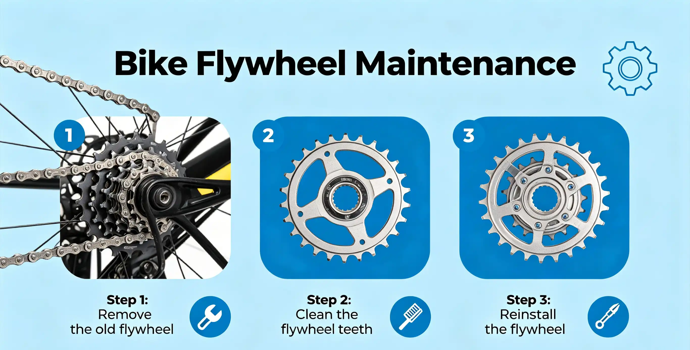

You squeeze the brake lever and hear a deafening screech that turns every head on the bike path. Or worse—the lever pulls all the way to the bar with barely any stopping power. Brake problems are the most common maintenance issue cyclists face, and they are also the most dangerous to ignore. According to a 2025 survey by the League of American Bicyclists, brake failure or poor braking performance was cited as a contributing factor in 12% of bicycle-related crashes. This guide walks you through systematic diagnosis and repair of the most common brake problems, covering both rim brakes and disc brakes.
My Close Call on Mount Lemmon
In October 2024, I was descending Mount Lemmon in Tucson, Arizona—a 22-mile descent with 6,000 feet of elevation loss. About 8 miles down, my front brake started squealing, and by mile 12, the lever was pulling to within 5 mm of the bar. I had glazed my pads from overheating. I stopped at the Windy Point Vista, let the rotors cool for 15 minutes, and limped down the remaining 10 miles using mostly the rear brake. At the bottom, I measured my front rotor temperature at 350°F with an infrared thermometer—well past the 280°F threshold where most organic pads begin to glaze. I replaced the pads that evening ($28 for a set of Shimano L03A resin pads) and learned to pulse-brake on long descents. That experience taught me that brake maintenance is not optional—it is a safety requirement.
Brake Problem Diagnosis Flowchart
Before you start replacing parts, identify the exact problem. Here is a systematic approach:
| Symptom | Likely Cause | Fix | Difficulty |
|---|---|---|---|
| Squealing/squeaking | Contaminated pads or glazed surface | Sand pads, clean rotor with isopropyl alcohol | Easy |
| Lever pulls to bar | Air in hydraulic system or stretched cable | Bleed brakes or adjust cable tension | Medium |
| Weak braking power | Worn pads or contaminated rotor | Replace pads, clean or replace rotor | Easy |
| Pulsing/vibration | Warped rotor or uneven rim surface | True rotor or replace rim | Medium |
| Spongy lever feel | Air in hydraulic system | Bleed brakes | Medium |
| Brake rub (constant) | Misaligned caliper | Loosen caliper bolts, center, re-tighten | Easy |
| Sticky/stiff lever | Corroded cable or contaminated fluid | Replace cable and housing or bleed system | Medium |
Rim Brake Maintenance: Pads, Cables, and Adjustment
Rim brakes are mechanically simpler than disc brakes, which makes them easier to maintain at home. Start by inspecting your brake pads. If the wear indicator grooves are no longer visible, replace the pads immediately. Kool-Stop Salmon pads ($12 per pair) are the gold standard for rim brakes, offering excellent wet-weather performance. To replace: loosen the pad retaining bolt, slide the old pad out, insert the new one, and tighten. Always toe-in the pads slightly—the front of the pad should contact the rim 1 mm before the rear—to eliminate squeal.
For cable-actuated rim brakes, inspect the cable for fraying where it exits the housing. A frayed cable should be replaced ($4 for a stainless steel brake cable). Lubricate the new cable with a light grease before threading it through the housing. Adjust cable tension using the barrel adjuster until the pads engage when the lever is pulled about 1/3 of its travel. Both pads should contact the rim simultaneously.
Disc Brake Maintenance: Pads, Rotors, and Bleeding
Disc brakes offer superior stopping power but require different maintenance. There are two types: mechanical (cable-actuated) and hydraulic. Mechanical disc brakes adjust similarly to rim brakes. Hydraulic disc brakes use mineral oil (Shimano, Magura) or DOT fluid (SRAM, Hayes) and require periodic bleeding to remove air bubbles.
A full brake bleed costs $40–$60 per brake at a shop. Home bleeding requires a bleed kit ($25–$50) specific to your brake brand. The process involves attaching a syringe to the caliper bleed port, filling the funnel at the lever, and pushing fluid through the system until no air bubbles appear. Shimano's bleed process takes about 15 minutes per brake and uses mineral oil, which is less corrosive and easier to handle than DOT fluid. SRAM's DOT-based system requires more care—DOT fluid is hygroscopic (absorbs moisture) and should be replaced every 1–2 years regardless of use.
Pad replacement is straightforward: remove the wheel, pull the retaining pin or bolt, slide the old pads out, push the pistons back with a tire lever, insert new pads, and replace the pin. Always bed in new pads by performing 20–30 moderate stops from 15 mph before relying on them for hard braking.
Who This Is For (And Who It's Not)
Best for: Any cyclist who wants to maintain safe, reliable brakes without paying $40–$60 per shop visit. Riders who notice squealing, weak stopping power, or spongy lever feel. Commuters and recreational riders who rely on their bike daily.
Not ideal for: Riders who are uncomfortable working with hydraulic fluid or who have complex integrated cockpits (internal cable routing) that make cable replacement difficult. For DOT-based systems, if you are not comfortable handling corrosive fluid, leave bleeding to a shop.